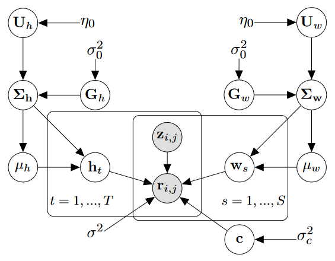
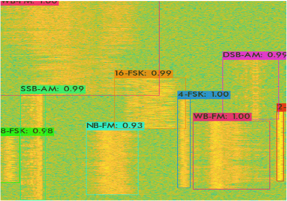
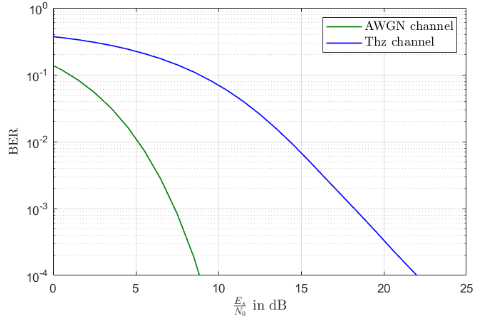
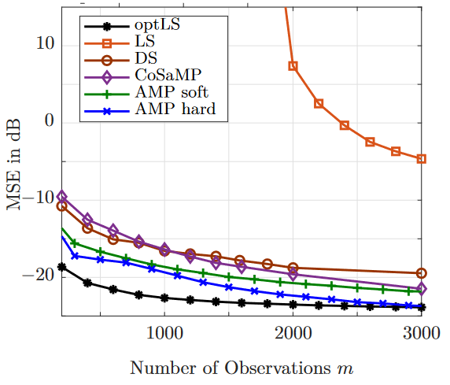
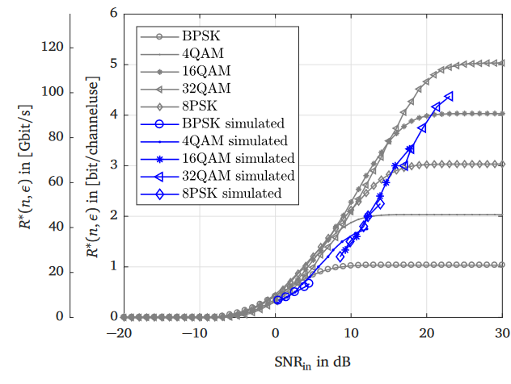
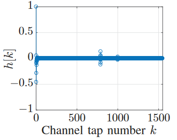

|
Viktoria Schram I'm a PhD student at The University of Melbourne. I am with the School of Computing and Information Systems and currently working on Performance Prediction for Natural Language Processing tasks and models, using probabilistic machine learning methods. My advisors are Prof. Trevor Cohn and Dr. Daniel Beck. Previously, I've received a Master's Degree in Electrical Engineering from the Friedrich-Alexander University in Erlangen-Nuremberg, Germany. There I was part of the Institute for Digital Communications, working on system design for THz communications systems supervised by Prof. Wolfgang Gerstacker. |
{kind=link}
Research |
|  |
Performance Prediction via Bayesian Matrix Factorisation for Multilingual Natural Language Processing Tasks
Viktoria Schram, Daniel Beck, Trevor Cohn Proceedings of the 17th Conference of the European Chapter of the Association for Computational Linguistics (EACL), 1790-1801, 2023 Performance prediction for Natural Language Processing (NLP) seeks to reduce the experimental burden resulting from the myriad of different evaluation scenarios, e.g., the combination of languages used in multilingual transfer. In this work, we explore the framework of Bayesian matrix factorisation for performance prediction, as many experimental settings in NLP can be naturally represented in matrix format. Our approach outperforms the state-of-the-art in several NLP benchmarks, including machine translation and cross-lingual entity linking. Furthermore, it also avoids hyperparameter tuning and is able to provide uncertainty estimates over predictions. |
|  |
Joint Detection and Classification of RF Signals using Deep Learning
Adela Vagollari, Viktoria Schram, Wayan Wicke, Martin Hirschbeck, Wolfgang Gerstacker 2021 IEEE 93rd Vehicular Technology Conference (VTC2021-Spring), 1-7, IEEE, 2021 With the rapid expansion of wireless technologies, monitoring and regulating the Radio Frequency (RF) spectrum usage becomes more important than ever. In this paper, we present a Deep Learning (DL) based approach to analyze the RF spectrum by detecting, localizing, and classifying active signals in RF frequency bands. We represent the radio signals in wideband spectrograms and formulate the signal detection and classification problem as an object detection task related to the computer vision field. To this end, You Only Look Once (YOLO), a state-of-the-art object detector, is adapted and optimized to detect, localize, and classify signals in spectrograms. For the experimental evaluation of YOLO as a signal detector, a rich dataset was simulated, consisting of diverse signals modulated with digital and analog modulation schemes and transmitted over channels with realistic propagation conditions. Our proposed method achieves an Average Precision (AP) of almost 87% and an average Intersection over Union (IoU) of 90%, thus demonstrating significant potential for analyzing RF spectral activity with high accuracy. |
|  |
Comparison of Transmission Concepts for Indoor THz Communication Systems
Viktoria Schram, Yifei Wu, Monika Kolleshi, Wolfgang Gerstacker International Workshop on Mobile Terahertz Systems (IWMTS) , 1-5, IEEE, 2020 Continuous research progress in THz communications including communications and networking paradigms as well as devices and implementation aspects indicate that this technology has the potential to become a key component in future beyond 5G systems. Still, some research challenges have to tackled before, e.g. related to the peculiarities of the highly frequency-selective THz channel resulting in a much longer channel impulse response (CIR) compared to channels in the lower frequency bands. In this paper, first, various equalization techniques such as minimum mean-squared error (MMSE) linear equalization and decision-feedback equalization (DFE) are studied for single-carrier transmission in order to combat the frequency selectivity of a deterministic THz channel. Furthermore, orthogonal frequency-division multiplexing (OFDM) communication with zero-forcing (ZF) equalization is considered, and the performance of single-carrier and multi-carrier transmissions are compared. Secondly, the advantages of a stochastic channel model are pointed out for the analysis of a multiple-input multiple-output (MIMO) transmission, and ZF and MMSE linear frequency-domain equalization are investigated for a single-carrier frequency-division multiple access (SC-FDMA) transmission over a MIMO THz channel. We conclude that SC-FDMA along with MMSE linear equalization is promising for practical THz systems. |
|  |
Approximate Message Passing for Indoor THz Channel Estimation
Viktoria Schram, Ali Bereyhi, Jan-Nico Zaech, Ralf R. Müller, Wolfgang Gerstacker 2019 Third International Balkan Conference on Communications and Networking, 2019 Compressed sensing (CS) deals with the problem of reconstructing a sparse vector from an under-determined set of observations. Approximate message passing (AMP) is a technique used in CS based on iterative thresholding and inspired by belief propagation in graphical models. Due to the high transmission rate and a high molecular absorption, spreading loss and reflection loss, the discrete-time channel impulse response (CIR) of a typical indoor THz channel is very long and exhibits an approximately sparse characteristic. In this paper, we develop AMP based channel estimation algorithms for indoor THz communications. The performance of these algorithms is compared to the state of the art. We apply AMP with soft- and hard-thresholding. Unlike the common applications in which AMP with hard-thresholding diverges, the properties of the THz channel favor this approach. It is shown that THz channel estimation via hard-thresholding AMP outperforms all previously proposed methods and approaches the oracle based performance closely. |
|  |
Analysis of THz Communications in the Finite Blocklength Regime
Viktoria Schram, Wolfgang Gerstacker 2019 IEEE 20th International Workshop on Signal Processing Advances in Wireless Communications (SPAWC), 1-5, IEEE, 2019 The theory of finite blocklength coding provides powerful tools to approximate the maximum achievable rate for short blocklength coding. In this work, the normal approximation is applied for the transmission over the THz channel assuming a point-to-point single-carrier system. Here, a transmission with bit interleaved coded modulation (BICM) is assumed and compared to coded modulation (CM). The performance is analysed for higher order modulations considering PSK and QAM. These results are verified by simulations, considering terminated convolutional codes with different coding rates, minimum mean-squared error linear equalization (MMSE-LE) and soft decision decoding. Our simulation results show that a rate of about 100 Gbps is achievable for 32QAM with a blocklength of 100 and a bit error rate of 1e-3 . |
|  |
Compressive Sensing for Indoor THz Channel Estimation
Viktoria Schram, Anamaria Moldovan, Wolfgang Gerstacker 2018 52nd Asilomar Conference on Signals, Systems, and Computers, 1539-1546, IEEE, 2018 Terahertz (THz) communication is a new emerging technology which has the potential to satisfy the steadily growing demands for high data rates. However, transmission over the THz channel is a difficult task since perfect channel state information (CSI) is not available in real systems. Due to the high transmission rate and a high molecular absorption, spreading loss and reflection loss, the discrete-time channel impulse response (CIR) of the THz channel is very long and exhibits an approximately sparse characteristic. Conventional least-squares (LS) channel estimation does not incorporate the sparsity assumption into the estimation process. Therefore, in this work, sparse channel estimation for an indoor THz transmission example scenario using compressive sensing (CS) techniques is analyzed. A CS method based on solving a convex program by using the Dantzig selector (DS) and a CS approach using a greedy pursuit method called compressive sampling matching pursuit (CoSaMP) are investigated. All methods are analyzed with respect to mean squared error (MSE) performance, computational efficiency and numbers of observations needed. The numerical results show that significant advantages over LS estimation are achievable in all categories. |
Teaching |
 |
Tutor for Statistical Machine Learning, 2023
Tutor for Natural Language Processing, 2022 Tutor for Business and Web Analytics, 2022 Organisation of a Stochastic Optimization Reading Group, 2020 |
|
Head Tutor for Convex Optimization, 2018, 2019
Organisation and Lead of Seminar Machine Learning for Wireless Communications |
|
Education |
|
|
PhD Thesis: Performance Prediction for NLP Tasks, 2020 - present
|
|
Master of Science in Electrical Engineering (Major: Wireless Communications Systems), 2015 - 2018 Title Master's Thesis: "Channel Coding for THz Communications" Title Seminar Thesis: "Compressed Channel Sensing" Bachelor of Science in Industrial Engineering and Management (Major: International and Strategic Management, Wireless Communications), 2010 - 2015 Title: "Entwicklung und Implementierung einer skalierbaren burst-betriebenen Wellenform für den V-UHF-Bereich" |
|
Outreach |
|
Participation and volunteering for STEMpals, 2024 - present
Representing STEMpals at It takes a Spark! STEM Conference, 2024 |
|
Design and source code from Jon Barron's website. |